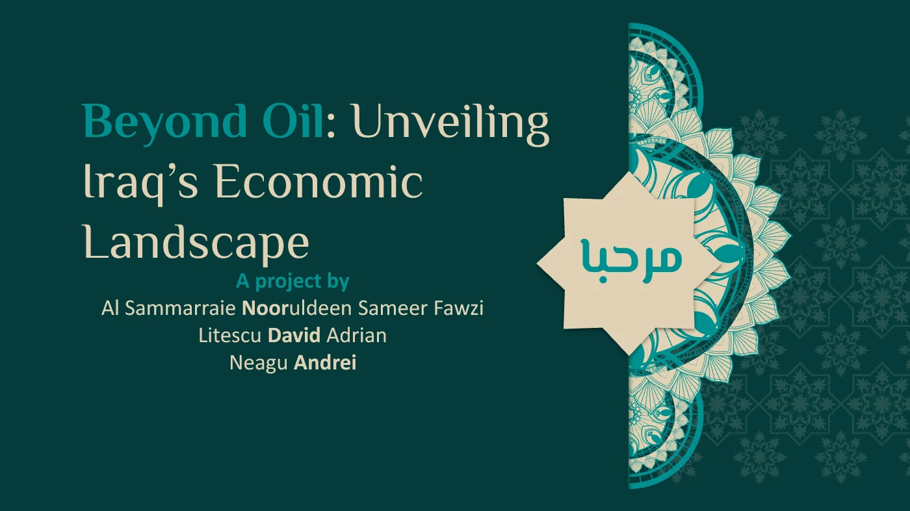

Beyond extraction
The presentation describes oil’s importance in exports and public revenue, then considers the limited breadth of non-oil production and trade.
 Al Sammarraie
Al SammarraieA team presentation exploring Iraq’s economic structure and the long-term challenge of building a broader foundation for jobs, trade and growth.
BACK TO RESEARCH↙BEYOND OIL: UNVEILING IRAQ’S ECONOMIC LANDSCAPE
Beyond Oil is a team presentation by Al Sammarraie Nooruldeen, Sameer Fawzi, David Adrian Litescu and Andrei Neagu. It connects oil’s central role in the economy with questions about production, jobs, trade, currency and possible paths toward diversification.
The deck moves from goods, services and the external sector to labor-market conditions, money and currency markets, then closes with strategic challenges and recommendations. Together, the sections present diversification as an economic and employment question, not only an oil-sector question.
The presentation describes oil’s importance in exports and public revenue, then considers the limited breadth of non-oil production and trade.
Employment, informality, migration and education appear as connected challenges in the team’s account of Iraq’s workforce.
Exchange rates, prices, interest rates and reserves form the monetary chapter of the deck’s economic overview.
The final section gathers structural constraints, human-capital opportunities and proposals for a broader economic foundation.
THE POWERPOINT · INSIDE THE PAGE
Use the site-styled controls or your keyboard arrows. A short reading note updates below the frame with each slide.

01 / COVER
The team introduces Iraq’s reliance on oil and frames diversification as the central economic question.
The slides combine economic indicators with the team’s interpretation and recommendations. Figures shown in the original deck refer to its historical research period, largely 2022–24. This page preserves that context rather than presenting the numbers as current data.
The slideshow notes explain the sequence and subject of each slide; they do not independently verify the original figures.
The project organizes a broad national question into production and trade, employment, financial conditions and strategy. It is a useful record of the team’s framing and proposed direction for diversification.
For current analysis, readers should check recent Iraqi and international statistical sources and the methods behind each measure.